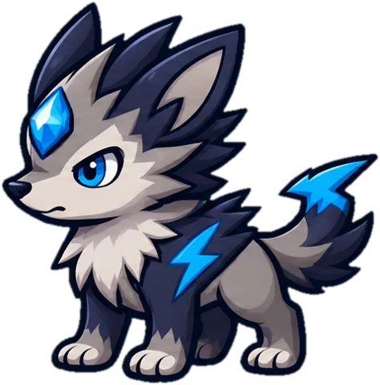

 ElectricDark
ElectricDarkTap a stage to read its story.
This Boltpup is grey-and-white with vivid blue eyes that seem to glow with their own cool light, and a single bright blue lightning bolt marking on its side. Its ears are large for its head and rotate toward every unfamiliar sound with clockwork precision. In Storm Spire it is calmer than its darker cousins, spending long stretches sitting very still in the fog, watching. The guardians noted that this Boltpup rarely startles - it has an instinct that tells it the difference between a threat and a test, and always waits to find out which it is.
Field note: This Boltpup's blue eyes can be seen glowing in thick fog from twenty meters - Storm Spire travelers follow the lights when lost.
Ghost Hollow. Boltpup and its family are found in the Ghost Hollow. See everyone who lives there.
Share a Bond Food that matches its types to become friends. Boltpup loves:
A Bond Food is not a trick. It joins your spirit with the Kimuro's spirit, and only when it chooses you.
Print the Kimuro adventure packs: mazes, cards, a board game and Bond Mark medals.
See the printable packs